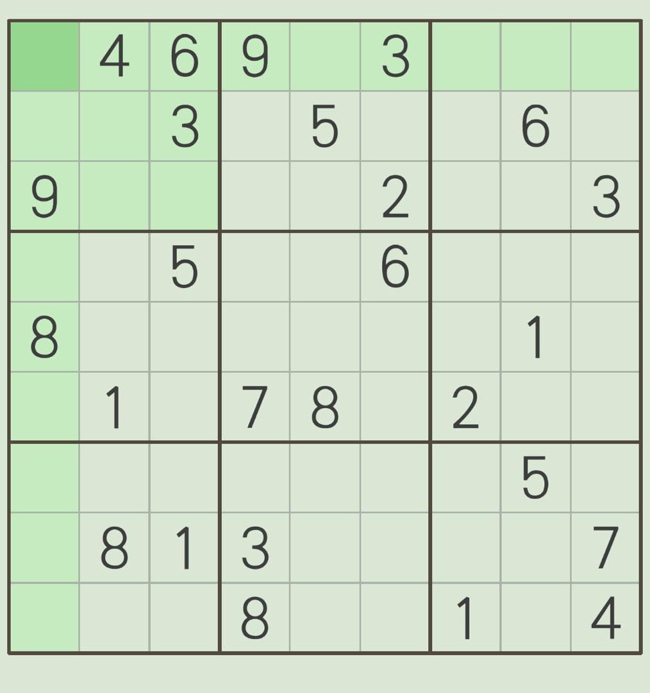

网上冲浪的时间碎片中，偶然从虎扑[1]步行街一个帖子上看到一张数独图片（原出处不知道是哪里，现在也忘记是哪个贴子上看到的了），反正当时也是为了打发零碎时间，然后就把这图片保存到本地，用画图工具打开，尝试去演算一下。
呵呵，果然没几步就推演不下去了，行了，接受自己的平庸吧，等下次有空了，再写个程序自动把它算出来，接受平庸但不认输，就磕上了。
。。。
一些思考准备
因为这种普通数独的规则直接明了，就算真要暴力破解，计算量也是可以接受的，但这会失去很多乐趣，当然后续程序设计上是不用过多考虑性能问题（但不代表直接摆烂）。
像这种特异化极强工程复杂度简单的问题，一个文件代码片段就能解决了，再结合个人的知识储备，首选以下几种语言：
-
C
如果想追寻实物的真理，选它没错，只要愿意折腾，它能很好的表达个人思辨过程，当然自己的思辨能力也要过关
-
C++
模式成熟，思路清晰，在设计过程中，就是对问题本质的不断分解，极具工程思想
-
Python
非常合适一些小实验小场景，对象实现便捷开发效率高
因为不打算使用任何的预测的方法（暴力、试错）来解决这个问题，所以不考虑回溯过程，同时也就不考虑递归。
由确定的数来推断不确定的数，感觉可利用的条件规则还是比较少的（不然就可以很容易的徒手算出来的），于是决定采用由确定的数，先转化为可能的数，再有可能的数之间的约束推断出新的确定值。
数独矩阵首选需要一个至少二维的数组，每个元素可能是一个确定的值，也可能是多个候选值，还有可能是数独异常导致的空值，所以这里可以考虑多态数组，或多态元素，其中元素，Python可以直接表现，确定的可以用值，候选用列表，异常用None，C++可以用些技巧，也可以和C一样，用候选数组（确定的后续个数为1），或 比特位等数字特征。
所以要选那种语言的，，。
就你了，C 语言，裸金属质感。（其实也是很随意就拍板子的，每一种都适合，与其纠结，不如 random() 一下）
粮草先行
新建文件…… （省略这些过程）
1 |
|
因为这份记录是后续补上的，代码在一些细节上可能已经处理过了，比如刚开始的时候，bcount函数是用__builtin_popcount内置函数的，for的初始变量前置等。
GNUC 编译器内置有一些函数，其中二进制相关的有
- __builtin_popcount
返回值的二进制表示形式中1的个数
- __builtin_ctz(l/ll)
返回值的二进制表示形式中末尾0的个数
- __buitlin_clz(l/ll)
返回值的二进制表示形式中前导0的个数。
- __builtin_parity
返回值的二进制表示形式中1的个数的奇偶性（偶：0，奇：1）
- __builtin_ffs
返回值的二进制表示形式中最后一个1在第几位（从后往前）
- …
更多细节请参考对应资料[2]
因为在后续处理计算过程中，需要频繁操作候选数的值，输出中输出又是负数，正数表示确定值，所以这中间需要做一层转换。
解数独过程分三段，初始化、解数独和转换返回格式。
1 | // 十字阵列的i行j列，或包含的宫，清除掉 bit |
其中sd_clsbit sd_init sd_conv 实现都比较简单，sd_clsbit 会被sd_init 内部使用和后续解码使用，主要功能是确定 （i，j）元素后，对其影响范围内的元素更新约束，包括同一行同一列和同一宫内的。
初始化时一般先默认所有的未确定元素可能值为 0x1ff(0b_1_1111_1111) 然后遍历每一个确定的值，用sd_clsbit 推演更新其所产生的约束条件，剔除掉不能的比特位。
在二进制中，需要剔除或添加每个数的某一位，通产的做法是：
- val &= ~(1 << bit);
- val |= 1 << bit;
现在终于到了关键的之处了，那就是界面过程 sd_decode 函数。
步步为营
先来看看当前的数独输出情况。
| 1,2,5,7 | 4 | 6 | 9 | 1,7 | 3 | 5,7,8 | 2,7,8 | 1,2,5,8 |
| 1,2,7 | 2,7 | 3 | 1,4 | 5 | 1,4,7,8 | 4,7,8,9 | 6 | 1,2,8,9 |
| 9 | 5,7 | 7,8 | 1,4,6 | 1,4,6,7 | 2 | 4,5,7,8 | 4,7,8 | 3 |
| 2,3,4,7 | 2,3,7,9 | 5 | 1,2,4 | 1,2,3,4,9 | 6 | 3,4,7,8,9 | 3,4,7,8,9 | 8,9 |
| 8 | 2,3,6,7,9 | 2,4,7,9 | 2,4,5 | 2,3,4,9 | 4,5,9 | 3,4,5,6,7,9 | 1 | 5,6,9 |
| 3,4,6 | 1 | 4,9 | 7 | 8 | 4,5,9 | 2 | 3,4,9 | 5,6,9 |
| 2,3,4,6,7 | 2,3,6,7,9 | 2,4,7,9 | 1,2,4,6 | 1,2,4,6,7,9 | 1,4,7,9 | 3,6,8,9 | 5 | 2,6,8,9 |
| 2,4,5,6 | 8 | 1 | 3 | 2,4,6,9 | 4,5,9 | 6,9 | 2,9 | 7 |
| 2,3,5,6,7 | 2,3,5,6,7,9 | 2,7,9 | 8 | 2,6,7,9 | 5,7,9 | 1 | 2,3,9 | 4 |
参考大部分网上的数独解法教程，根据作用效果，主要有两种规则
- 确定元素数值
- 排除元素候选值
其中确定类型中，最简单的就是候选元素值唯一。
1 | // 单一元素 |
其次是某种可能值，在某个作用域中唯一
1 | // 作用域中唯一 |
在 sd_decode内先串上这两条规则
1 | static int sd_decode(int buf[9][9]) |
再次运行，得到如下结果
| 1,2,5,7 | 4 | 6 | 9 | 1,7 | 3 | 5,7,8 | 2,7,8 | 1,2 |
| 1,2,7 | 2,7 | 3 | 4 | 5 | 8 | 9 | 6 | 1,2 |
| 9 | 5,7 | 8 | 1,6 | 1,6,7 | 2 | 4,5,7 | 4,7 | 3 |
| 2,3,4,7 | 2,3,7 | 5 | 1,2 | 1,2,3,4 | 6 | 4,7,8 | 4,7,8 | 9 |
| 8 | 2,3,7,9 | 2,4,7,9 | 5 | 2,3,4,9 | 4,9 | 4,7 | 1 | 6 |
| 6 | 1 | 4,9 | 7 | 8 | 4,9 | 2 | 3 | 5 |
| 2,4,7 | 2,6,7,9 | 2,4,7,9 | 2,6 | 2,4,6,9 | 1 | 3 | 5 | 8 |
| 2,4 | 8 | 1 | 3 | 2,4,9 | 5 | 6 | 2,9 | 7 |
| 2,3,5 | 2,3,5,6,9 | 2,9 | 8 | 2,6,9 | 7 | 1 | 2,9 | 4 |
可见以消除了不少，那么接下来就是消除不可能的，之后再复用上面的，可进一步确定元素值
在消除规则中，有一个简单的规则不严谨描述如下：
已经有n个数字占据了n个空格，那么，其他空格中就不会出现这n个数字，这样，在填该基本单元内的其他待填空格时，就可以把这n个数字排除掉。
这里先实现它的特殊情况，即 相同n个数字组合重复占据了其作用域内n个空格，则作用域内其它空格不可能出现这n个数字中任何一个
1 | // 循环闭环 |
好了再运行一下，额~ 数独已经被全部解出来了。
| 1 | 4 | 6 | 9 | 7 | 3 | 5 | 8 | 2 |
| 7 | 2 | 3 | 4 | 5 | 8 | 9 | 6 | 1 |
| 9 | 5 | 8 | 6 | 1 | 2 | 4 | 7 | 3 |
| 3 | 7 | 5 | 1 | 2 | 6 | 8 | 4 | 9 |
| 8 | 9 | 2 | 5 | 3 | 4 | 7 | 1 | 6 |
| 6 | 1 | 4 | 7 | 8 | 9 | 2 | 3 | 5 |
| 4 | 6 | 7 | 2 | 9 | 1 | 3 | 5 | 8 |
| 2 | 8 | 1 | 3 | 4 | 5 | 6 | 9 | 7 |
| 5 | 3 | 9 | 8 | 6 | 7 | 1 | 2 | 4 |
事情到此好像已经可以告一段落了吧
穷寇莫追
后来又到网上找了几个同样简单的数独，有的能解，有的依然不能。然后有补充了几个简单规则（难的规则太伤脑筋了，没时间和精力），陆续又能多解一些，完整的源码，可到对应代码仓库[3]中查看。
在扩充的规则中，有的作用相互交叉，互为特例，还有一些实现，使用到了一些二进制比特控制的技巧，来完成分解或任意组合。
在资料翻阅中也渐渐发现一些理论研究和文化圈子的迹象，纯属路过，没有班门弄斧的意思，哈哈。
适而可止，寥寥几笔，这事就告一段落了。